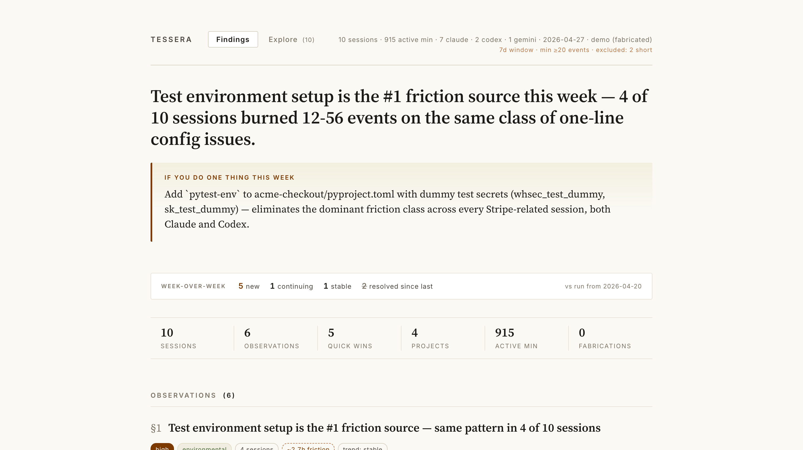

Tessera reads your local Claude Code, Codex, and Gemini CLI sessions and surfaces the patterns you can’t see from inside any single conversation. Friction sources, recurring fixes, what’s getting better, what isn’t.

Inside a session you remember the friction you just felt. You don’t see that you’ve had the same friction in seventeen other sessions across three projects. You don’t see that the same one-line config fix would have eliminated all of them. You don’t see what’s getting worse this month.
Tessera is the mirror. Patterns emerge only from outside the flock — and your sessions are the flock.
Symlinks (no copies) ~/.claude/projects/, ~/.codex/sessions/, ~/.gemini/tmp/ into a temp dir; normalizes each agent’s on-disk format into a single event schema.
Each session’s compressed event stream gets one Sonnet 4.6 call producing a structured narrative — goal, tasks, friction moments with quotes, key decisions, dead ends, recurring environmental issues, counterfactual. Cached by content hash.
One synthesis call across all narratives produces evidence-grounded observations. Citations use 4-character refs (S001, S047) that map deterministically back to real sessions. Fabrication rate by design: 0%.
Every observation cites the sessions it came from. Click any reference to drill into that session’s full narrative. Below — three real-shape examples from the demo dataset.
Across 4 distinct sessions, the agent burned 12–56 events on missing test config: STRIPE_WEBHOOK_SECRET, live-key-in-test, python not on PATH on macOS, database-locked migrations. Each is a one-line fix that would eliminate the entire class of error.
pytest-env to acme-checkout/pyproject.toml with dummy test secrets (whsec_test_dummy, sk_test_dummy). Add alias python=python3 to ~/.zshrc. One evening of setup eliminates the dominant friction class for the rest of the year.
S005 (mobile SDK upgrade) ran npx expo install --fix 14 times in 4 hours hoping the peer-deps would self-resolve. Both cases share a structure: agent runs a command, it fails, agent runs the same command again. After 2–3 retries, the issue is never the command’s flakiness — it’s missing context.
retry_without_change rule. Install tessera-live in Claude Code: /plugin add ./tessera-live.
Sessions tagged “thoroughly_verified” cleared with minimal user-caught errors. “Claimed_only” sessions had user-caught errors. This is a habit-level signal, not a model-capability one.
Run tessera run Monday morning. Open the dashboard. Read the headline. Click [useful] on observations that match what you felt. Click SAVE, paste the one-liner in your terminal.
The tessera-live Claude Code plugin watches your live sessions for known waste patterns. When one fires, it nudges Claude — and if you rated a similar pattern useful last week, it attaches the fix you said worked.
Without the dashboard, the coach is just six hardcoded rules. Without the coach, the dashboard is interesting reading you forget by Wednesday. Together they’re a closed loop.
Tessera reads your trace files locally. The two LLM calls (per-session narrative + cross-session synthesis) route through your existing claude CLI auth — no separate API key, no telemetry, no analytics. Output stays on disk.
The dashboard contains verbatim quotes from your sessions. Review before sharing.
Cost: ~$1–3 per weekly run on a typical cache-warm machine. ~$15–30 one-time for a full historical backfill. All token usage routes through your existing Claude subscription.